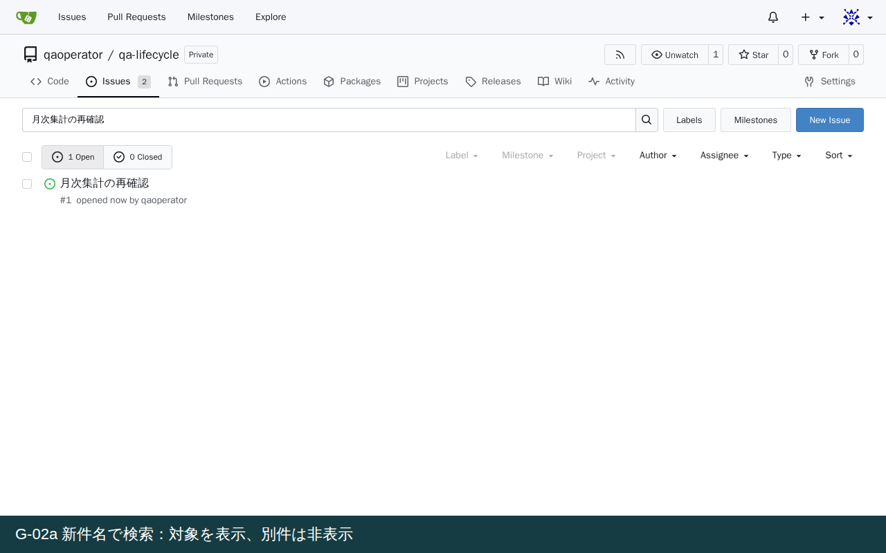
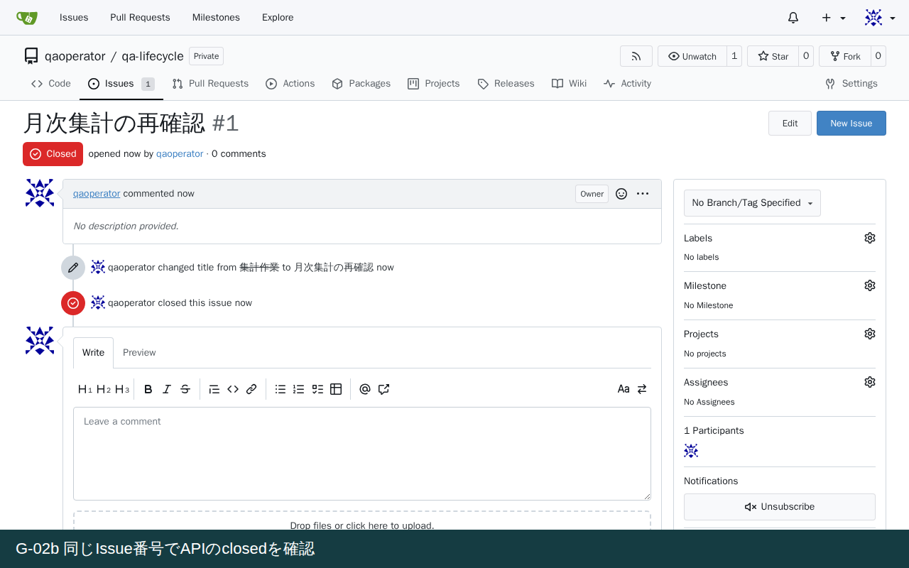

Find and close a renamed issue
After changing the title through the API, the test searches for the new title in the issue list. The result opens the original issue number and excludes an unrelated issue. A final API read confirms that the issue was closed.
Screenshots




Result The search result opened the original issue number and excluded the unrelated issue. After closure, the API returned the same number with state closed.
Browser recording
Local recording · Chromium · 72da163